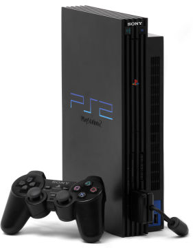

PlayStation 2
 PlayStation 2 has at its heart a 128 bit CPU, the 'Emotion Engine', with data processing capabilities far exceeding those of PCs at that time, and incorporates the 'Graphics Synthesizer', which delivers unparalleled graphic quality and detail. PlayStation 2 adopts DVD-ROMs as the new media for game distribution, and can also be used as a DVD player to enjoy visual contents, such as films. The console comes with DUALSHOCK 2 controller which is an enhanced version of the original DUALSHOCK controller, newly incorporated with a vibration feature. The conceptually designed system comes in “Black” color, and can be placed either vertically or horizontally.
Description
The PlayStation 2 (officially branded as PS2) is a home video game console developed and marketed by Sony Computer Entertainment. It was first released in Japan on March 4, 2000, in North America on October 26, 2000, and in Europe and Australia on November 24, 2000, and is the successor to the original PlayStation, as well as the second installment in the PlayStation console line-up. A sixth-generation console, it competed with Sega's Dreamcast, Nintendo's GameCube, and Microsoft's original Xbox. Announced in 1999, the PS2 offered backward-compatibility for its predecessor's DualShock controller, as well as its games. The PS2 is the best-selling video game console of all time, having sold over 155 million units worldwide, as confirmed by Sony. Over 3,800 game titles have been released for the PS2, with over 1.5 billion copies sold.
Sony later manufactured several smaller, lighter revisions of the console known as Slimline models in 2004. Compared to the previous model, internal volume is reduced by 75%, overall weight is halved, and thickness is trimmed down to 2.8cm, resulting in a slimmer and lighter-weight design. Equipped with an integrated Ethernet port for network gaming, the new PlayStation 2 further expands the universe of online gaming. The system comes in “Charcoal Black”, a color derived from the original PlayStation 2 system. Other classic colors such as “Ceramic White” and “Satin Silver” are later introduced, as well as limited-edition colors.
Hardware
The console uses the Emotion Engine CPU, custom-designed by Sony and Toshiba and based on the MIPS architecture with a floating point performance of 6.2 GFLOPS. The GPU is likewise custom-designed for the console and called the Graphics Synthesizer, with a fillrate of 2.4 gigapixels/second, capable of rendering up to 75 million polygons per second. When accounting for features such as lighting, texture mapping, artificial intelligence, and game physics, it has a real-world performance of 3 million to 16 million polygons per second.
The PlayStation 2 may natively output video resolutions on SDTV and HDTV from 480i to 480p while other games are known to support up-scaled 1080i resolution using any of the following standards: composite video (480i), S-Video (480i), RGB (480i/p), VGA (for progressive scan games and PS2 Linux only), YPbPr component video (which display most original PlayStation games in their native 240p mode which most HDTV sets do not support), and D-Terminal. Cables are available for all of these signal types; these cables also output analog stereo audio. Additionally, an RF modulator is available for the system to connect to older TVs. Digital (S/PDIF) audio may also be output by the console via its TOSLINK connector which outputs 2.0 PCM, 5.1, and 6.1 channel sound in Dolby Digital, Dolby Digital Surround EX, DTS, And DTS-ES formats.
PlayStation 2 users had the option to play select games over the Internet, using dial-up or a broadband Internet connection. The PlayStation 2 Network Adaptor was required for the original models, while the slim models included networking ports on the console. Instead of having a unified, subscription-based online service like Xbox Live as competitor Microsoft later chose for its Xbox console, online multiplayer functionality on the PlayStation 2 was the responsibility of the game publisher and ran on third-party servers. Many games that supported online play exclusively supported broadband Internet access.
Software for the PlayStation 2 was distributed primarily on DVD-ROM, with some titles being published on CD-ROM. In addition, the console can play audio CDs and DVD movies and is backward-compatible with almost all original PlayStation games. The PlayStation 2 also supports PlayStation memory cards and controllers, although original PlayStation memory cards will only work with original PlayStation games and the controllers may not support all functions (such as analog buttons) for PlayStation 2 games.
The standard PlayStation 2 memory card has an 8 MB capacity. There are a variety of non-Sony manufactured memory cards available for the PlayStation 2, allowing for a memory capacity larger than the standard 8 MB. The console also features 2 USB ports, and 1 IEEE 1394 (Firewire) port. A hard disk drive can be installed in an expansion bay on the back of the console, and is required to play certain games.